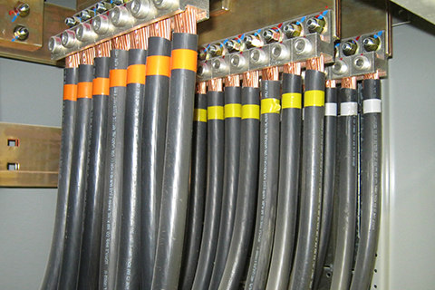

Генеральный подряд
Наша компания предоставляет услуги генерального подряда на строительство, ремонт и реконструкцию зданий и помещений коммерческого назначения: торговые, развлекательные и офисные центры, заводы, фабрики, логистические комплексы, магазины, склады, рестораны, офисы.
За считанные дни мы сможем организовать работу всех подразделений нашей компании и субподрядчиков на вашей строительной площадке, быстро выполняя даже самые сложные технические решения и большие объемы работ. Квалифицированный инженерно технический состав компании максимально интегрирован со всеми проверенными годами субподрядными организациями, что позволяет быстро и качественно решать задачи с наибольшей производительностью.
- разработка технической документации и формирование бюджета
- составление смет и плана финансирования
- утверждение графика выполнения работ
- проведение подрядных тендеров
- организация строительной площадки
- комплексное управление проектом
- координация и контроль субподрядных организаций
- оптимизация проектных решений к бюджету
- обеспечение безопасности проведения работ
- сдача объекта в эксплуатацию
Собственные мощности
Все виды отделочных работ
Общестроительные работы
Подбор субподрядчиков
Вентиляция и кондиционирование
Водопровод, канализация и отопление

Монтаж электрических сетей и освещения
Системы СКС, СКД, видеонаблюдения
Монтаж систем пожарной безопасности
Светопрозрачные конструкции
А также других узкоспециализированных направлений…